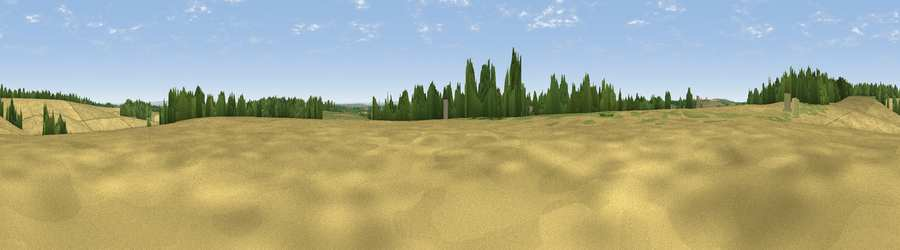

Viewpoint near Farnborough
#29514 in England · top 50% of its area beats it · near FarnboroughThe view, rendered

A 360° render of this exact spot computed from the terrain model, tree cover and land cover — summer colours, afternoon light, calibrated against photographs of famous viewpoints. Real trees, hedges and buildings will differ in detail.
The panorama
Grey silhouette: terrain skyline in each direction (720 bearings, Earth curvature and refraction included). Dashed green: skyline with trees (+15 m) and buildings (+8 m) as obstacles. Blue strip: how far the ground is visible on each bearing.
Where the view opens
Wedge length = distance to the farthest visible ground on that bearing (vegetation-aware). Rings at 10, 25 and 50 km.
What fills the view
71% cropland · 16% grassland · 13% woodland
Angular shares of the visible panorama (visual magnitude), not map area. Landscape diversity 0.36 (0–1 Shannon).
Key numbers
More beautiful places nearby
The staircase of upgrades: each row has a higher view potential than everything closer. Driving times are estimates from straight-line distance, calibrated against real road routing — check an actual route before setting out.
| Place | Direction | Drive | Score |
|---|---|---|---|
| Viewpoint near Farnborough | NNW · 1 km | ~4 min | 57.5 |
| Viewpoint near Letcombe Bassett | NW · 4 km | ~9 min | 59.9 |
| Viewpoint near Letcombe Regis | NW · 4 km | ~9 min | 62.0 |
| Seven Acre Hill | WNW · 9 km | ~18 min | 66.6 |
| Viewpoint near Kingston Lisle | WNW · 12 km | ~22 min | 68.5 |
| Viewpoint near Woolstone | WNW · 13 km | ~23 min | 70.9 |
| Viewpoint near Woolstone | WNW · 13 km | ~24 min | 76.7 |
| Martinsell viewpoint | SW · 31 km | ~48 min | 77.3 |
51.53914, -1.39041 · source: screening · position refined by local search. Computed location — check access rights before visiting.